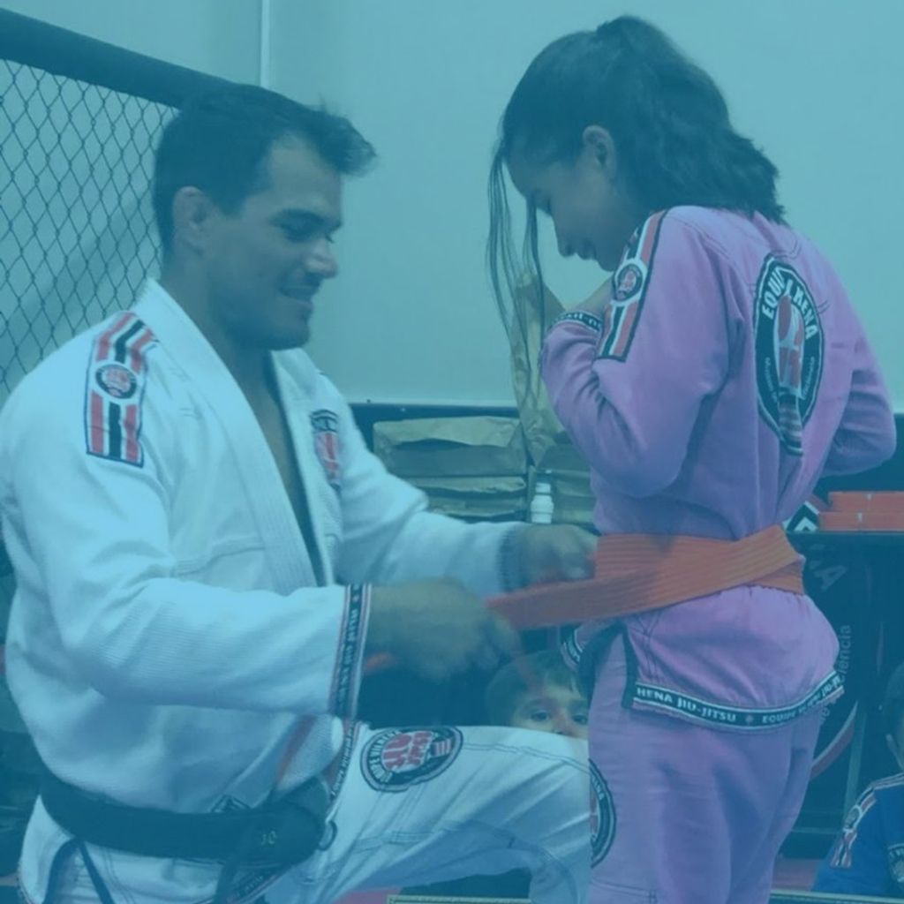
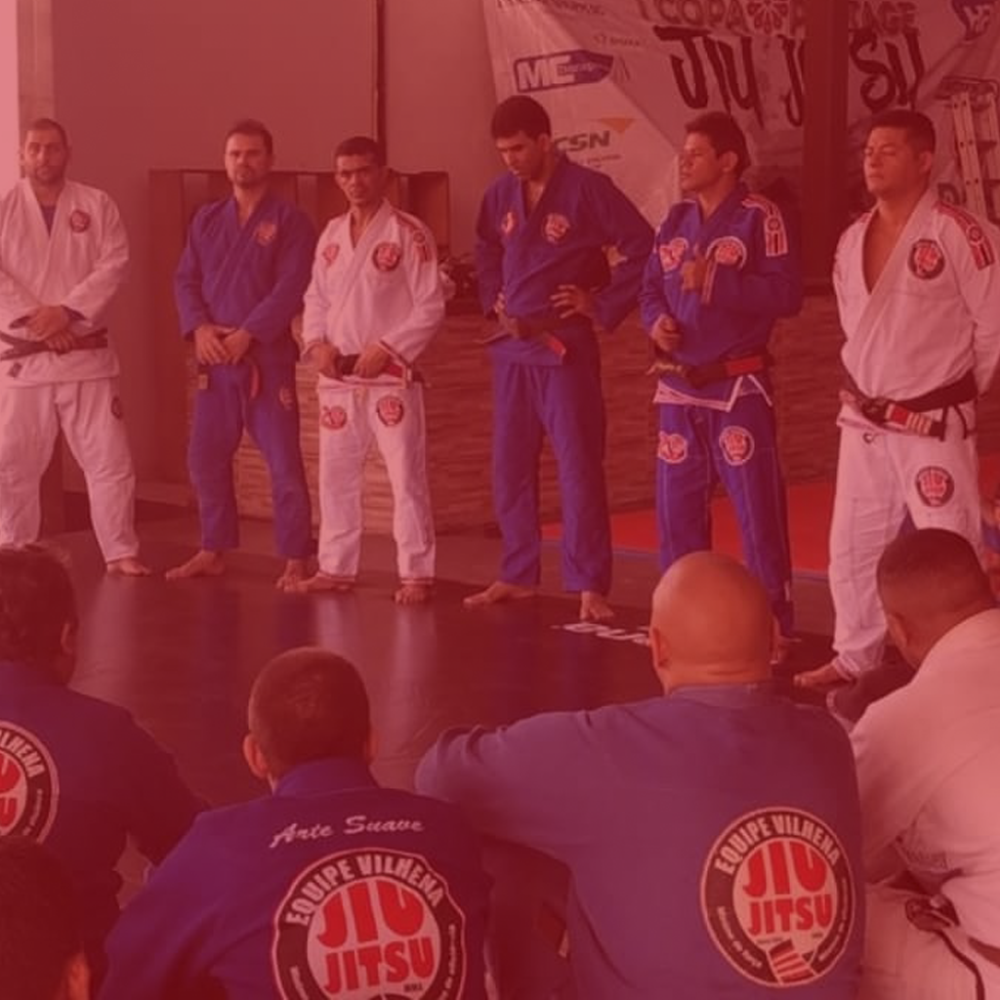
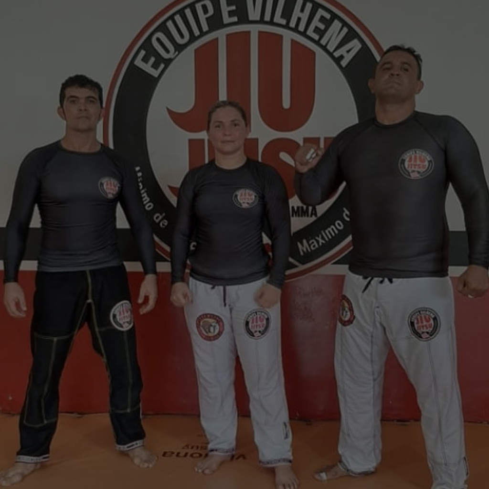

Equipe Vilhena Jiu-Jitsu
Ensinando defesa pessoal, Jiu-Jitsu e ajudando a formar cidadãos desde 1999.
Força e Honra Oss.
Jiu-Jitsu na luta pela qualidade de vida professor – ISLANDER SOUSA.
Fundador da equipe Vilhena Jiu-Jitsu
Praticante de artes marciais desde sua infância tendo treinado diversas artes como Karate, Judo, Boxe e Capoeira deu incio aos treinos de Jiu-Jitsu no ano de 1995 aos 17 anos em pouco tempo já estava participando de eventos de Vale Tudo e algumas competições de Jiu-Jitsu. Em 1999 estabeleceu-se na cidade de Marabá com a missão de trazer o tão falado esporte pra região do sul do estado.......
Escolas equipe Vilhena
As escolas da Equipe Vilhena seguem um regime de padronização em todas as suas unidades, professores qualificados, alunos com kimonos devidamente personalizados a disciplina e o respeito sempre foi o ponto alto que faz com que essa equipe tenha mais de 20 anos de historia com a arte suave.
-
Jiu-Jitsu Infanttil
A prática do jiu-jitsu para crianças traz diversos benefícios que agregam na formação do caráter e desenvolvimento de uma criança sadia, focada, além do fato de conviver num ambiente que estimula a tomada de decisões…
-
Jiu-Jitsu Adulto
O jiu-jitsu é uma Arte Marcial baseada em quedas, alavancas e estrangulamentos. Através da sua técnica, é possível derrotar um adversário sem desferir um soco ou chute. Nela, pessoas menores e mais fracas podem dominar outras maiores…
-
Submission e Defesa Pessoal
Uma das artes márcias mais eficientes para aprender técnicas de defesa pessoal. O conhecimento da técnica capacita você evitar situações de perigo sem precisar recorrer a violência física…